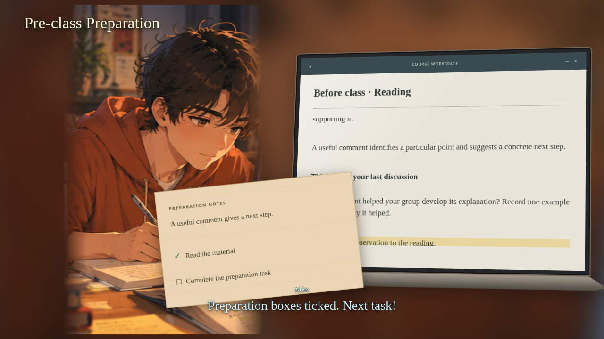

Gaming
the System当指标成为目标，
学习会发生什么？
指标设计、规则建模与结果表达的一次实践
我们制作了一款面向教师的评估决策模拟游戏，让玩家选择指标、增加要求并调整权重，观察学生行为如何变化。
我的工作重点，是把教学意图细化为可执行的规则，处理不同选择下的反馈路径，并调整结果表达，避免将指标达标直接呈现为学习改善。

让玩家尝试改变规则，
再观察规则如何改变行为。
如果参与次数与成绩挂钩，学生可能会更频繁地发言。但发言次数增加，是否意味着思考更深入？我们把这个问题变成三个相互连接的决策阶段。
One Metric
选择一个指标
指标如何影响行为？More Metrics
增加衡量要求
更多指标能解决问题吗？Weighting
调整指标权重
优先级如何影响努力分配？回顾体验，在 Padlet 提出并讨论自己的评估方案。
概念背景：Goodhart’s Law。游戏通过模拟情境探索指标与目标之间的张力。
关卡结构确定后，还需要回答三个实现问题：不同选择如何分类、不同起点如何继续，以及结果应该如何被理解。
指标达标，不应被界面
直接表达成学习改善。
早期结果页使用百分比增长展示指标变化。但数字上升与“表现提高”的措辞放在一起，可能让玩家直接理解为学习已经改善，也重复了管理视角中的进度展示。
我将结果调整为所选 Metric 的勾选状态，保留 Management’s view，再让玩家进入课堂观察。页面先明确指标达标，学生如何应对则由后续体验揭示。
表达边界
这一页展示指标结果，不替玩家判断学习价值。
后续检查
玩家能否区分指标达标与学习改善，需要结合体验反馈继续观察。
其他体验细节：转场、文案与声音
迭代还涉及关卡到操作界面的过渡、字幕与身份位置、玩家姓名同步，以及 Ending 的反思与讨论引导。音频方案也经历过调整；交接仓库保留音效，可选背景音乐依赖另行提供的录音，因此不能将历史配乐方案视为当前可用功能。
从学习意图，
到可以操作的规则。
回看机制设计，我将这些工作整理为四个相互关联的角度。下面两个案例分别说明如何组织选择，以及如何安排不同起点下的比较任务。
玩家逐步意识到什么？
同一问题有哪些情况？
不同起点下，接下来做什么？
操作、限制和反馈如何配合？
A. 20 种组合，如何组织成可以理解的反馈？
在 Level 2 的机制探索中，玩家从六个指标中选择三个。我按组合的关注重点组织反馈：外显行为、质量／深度，以及两者混合。分类用于区分情境，不表示某类天然更高级。
外显行为
准备、参与、专注
三个指标均来自该组质量／深度
讨论、反思、同伴回应
三个指标均来自该组混合
两组指标共同出现
不自动等于更好的评估设计依据
按组合的关注重点组织反馈，用于区分衡量体系，而不是给玩家选择排等级。
回看这一决定
18 种混合组合被归入同一类。这保留了清楚的分类结构，但不同组合之间的差异是否值得进一步呈现，仍值得检视。
B. 任务适应玩家的起点，而不是重复相同步骤
玩家第一次就可能分配出接近均等的权重。如果所有人都被要求重新平衡，这部分玩家就缺少明确的下一步。我曾设计不同的后续任务，让不同起点的玩家都能获得可比较的情境。
制造明显差异
尝试重新平衡
↓ 共同目的：观察并比较不同权重状态
路径服务于比较，不把均衡权重规定为正确答案。
在当时的规则探索里，已经形成所需对比的玩家可以进入比较；尚未形成时，再补充参照。我需要保证玩家获得可比较的情境，同时避免为了走完固定流程而增加无意义的操作。
查看当时的路径条件
首次判断：最高与最低权重相差不超过 5 个百分点时，视为接近均等。
接近均等时，第二次分配需要制造至少 20 个百分点的差距；首次不均等时，第二次需要缩小原有差距。
重新平衡后仍未接近均等时，系统提供 34 / 33 / 33 作为参照；已经形成所需对比时，则进入比较。
把复杂设计变成
团队可以接手的工作。
游戏、叙事和动画由不同成员分工推进。除了制作游戏，我花了很多时间整理交接材料、反馈方式和检查节点，让大家理解同一个设计，并在修改发生时保持一致。
准备与交接
试玩 HTML ＋机制文档＋截图指南
制作与审阅
具体问题＋建议方案＋预览确认
测试与交付
整体试玩＋在线测试＋发布备份
遇到的问题
设计信息多，无法额外开长会逐项说明
我的安排
HTML、机制文档与截图指南互补交接
检查目的
同伴能否体验流程、查找界面并理解设计目的
遇到的问题
反馈分散，口头讨论容易停留在抽象意见
我的安排
提前记录问题画面、说明和建议方案
检查目的
能否围绕具体问题作出决定
遇到的问题
单项修改正确，不代表整合后连贯
我的安排
单项预览与整体试玩分开进行
检查目的
修改是否符合要求，前后衔接是否仍成立
交接材料与审阅记录
我说明规则、分支和叙事需要达到的效果，把具体内容留给负责叙事的成员。以下是当时使用的截图指南、流程图与文字说明。
交付同时准备备用链接和可下载的本地 HTML 版本。
反馈既回应设计，
也暴露新的问题。
参与者为课程中的学生，其中大部分已有教学经验。以下原话来自游戏后的 Padlet 反思与体验反馈。
学习与评估
反馈既关注指标之外的学习质量，也强调权重需要结合教学情境。与此同时，也有人建议均衡分配权重，提醒我继续检查玩家是否把某一种分配理解成了标准答案。
引导与节奏
反馈中既有加快节奏的建议，也有对过程理解的提醒：玩家常常到下一步才反应过来上一步的目的。另有建议指出，应提示不存在完美结局，避免玩家觉得自己失败。
这些意见指向同一个检查方向：从玩家当下知道什么出发，说明操作目的、安排揭示时机，并让开放式结局有清楚的解释。
探索与模拟
反馈提出了向持续管理模拟发展的可能：延长探索过程，让玩家尝试不同方法；从单个学生扩展到多个学生，呈现不同的努力程度，并观察班级整体结果。
后续可以探索多轮比较和学生差异，同时思考如何避免让“把进度条调高”取代对学习质量的关注。
下一轮，先改善理解，再考虑扩展模拟
以下是根据反馈提出的下一轮计划。先处理现有体验的理解与节奏，再评估扩展范围。
01 任务目的与结局引导
反馈已指出目的理解滞后，以及将结局视为失败的可能。优先检查玩家在选择前是否理解任务，以及结束后如何解释结果。
02 体验节奏
结合加快节奏的建议，检查哪些等待支持理解，哪些只是拖慢推进。
03 多学生、多轮模拟
这能扩大探索空间，也会增加规则与体验复杂度。先检视它是否帮助理解学生差异，再决定如何扩展。
从做出游戏，到判断下一步。
这次实践让我开始把指标、规则和展示方式放在一起考虑：系统不仅要计算结果，也需要让使用者理解结果意味着什么。课程版本完成后，我更需要判断下一步先解决什么，而不是继续增加功能。
当前展示为课程项目。后续迭代完成后，将在这里更新。
体验课程版本 ↗